Гайд по созданию компендиумов на РолеБазе
И снова привет! После небольшого перерыва я всё же взялся за написание четвёртого (и, наверное, самого полезного) гайда по РолеБазе.
Что такое компендиумы?
Компендиум - это коллекция данных, хранящая готовые элементы (персонажей, предметы, заклинания, сцены и т.д.), которые можно импортировать на текущий стол по мере необходимости.
В РБ компендиумы могут быть:
Личными - то есть созданными вами и видимыми только вами.
Групповыми - т.е. те, которые вы делаете вместе с другим пользователем.
От Сообщества - т.е. созданные и опубликованные другими пользователями.
Встроенные - несколько компендиумов, созданных разработчиками.
Как пользоваться компендиумами?
Для тех, кто не собирается создавать свои.
1. Заходим в игру.
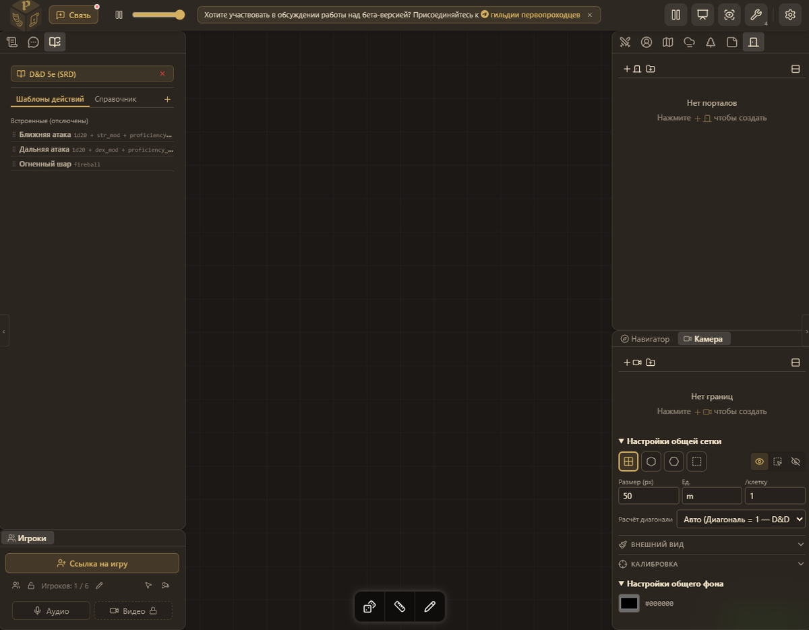
2. Тыкаем на иконку манускрипта в левом верхнем углу.
3. Через "+" левее "Поиска статей" добавляем нужный компенд.
Здесь отображаются все доступные вам компендиумы.
Через кнопку "папка с плюсиком" можно начать создавать новый компендиум прямо в игре. А по кнопке правее можно отфильтровать нужный тип элемента.
Ну ещё есть поиск среди статей
Чтобы использовать например токен, просто переместите его на стол и он появится со всем набором характеристик. Всё остальное работает примерно так же (наверное 😏).
Как пользоваться музыкой (не самое очевидное) я рассказал в конце прошлого гайда.
Как создавать свои компендиумы
Но количество опубликованных компендиумов сейчас довольно мало, поэтому вам точно захочется создать свой.
Где?
Повторю ещё раз для тех, кто не читал прошлые мои гайды.
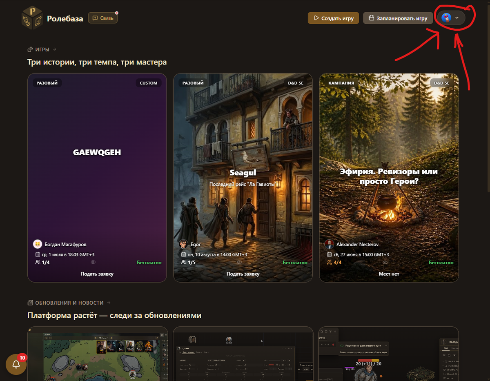
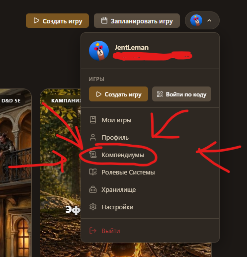

Интерфейс
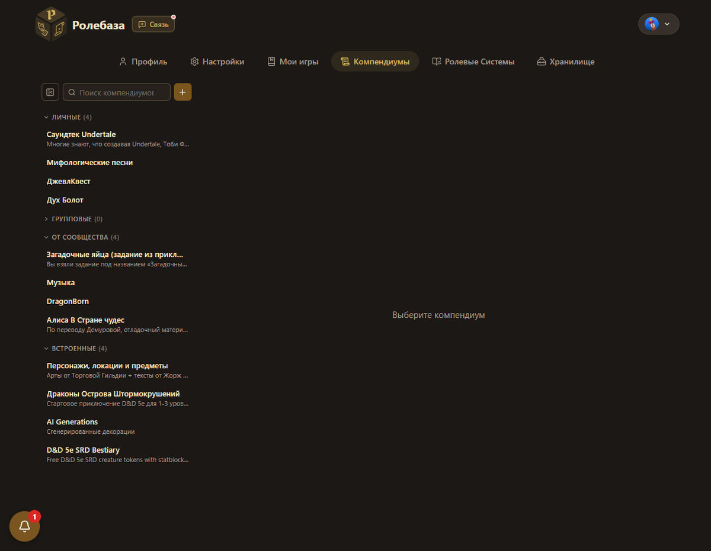
Слева можно увидеть все доступные вам компендиумы, а выше такие кнопки:
Первая кнопка сворачивает меню:
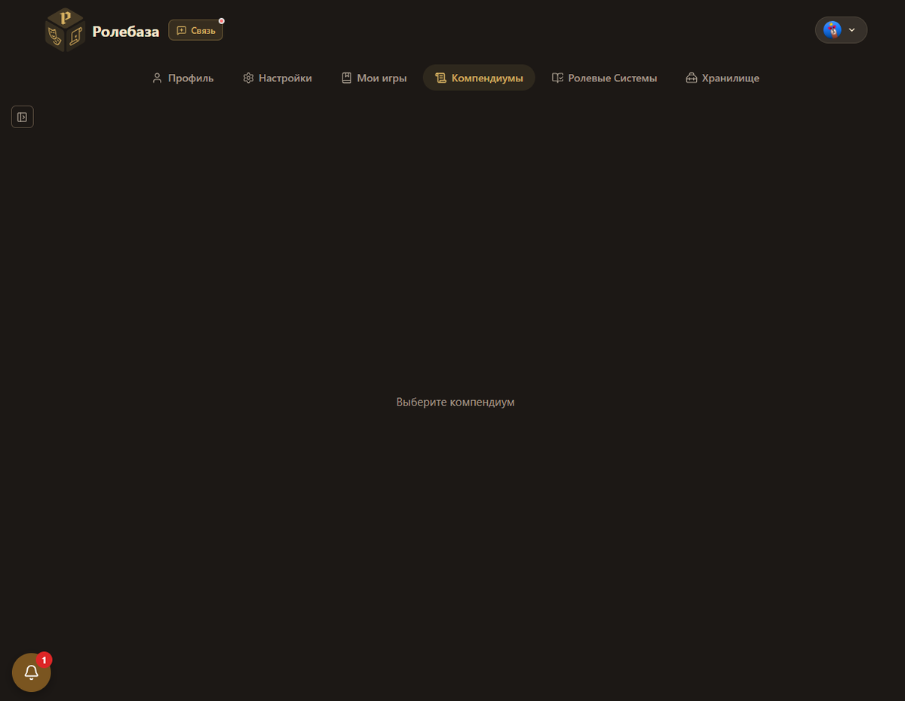
Вторая, как неудивительно, поиск.
Третья - создать новый компендиум. Давайте нажмём на неё!
Создание элемента
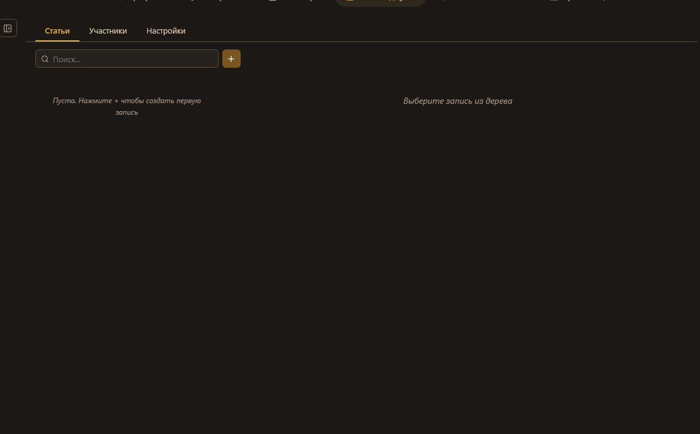
Ещё раз нажимаем на другой плюсик и создаём первую запись.
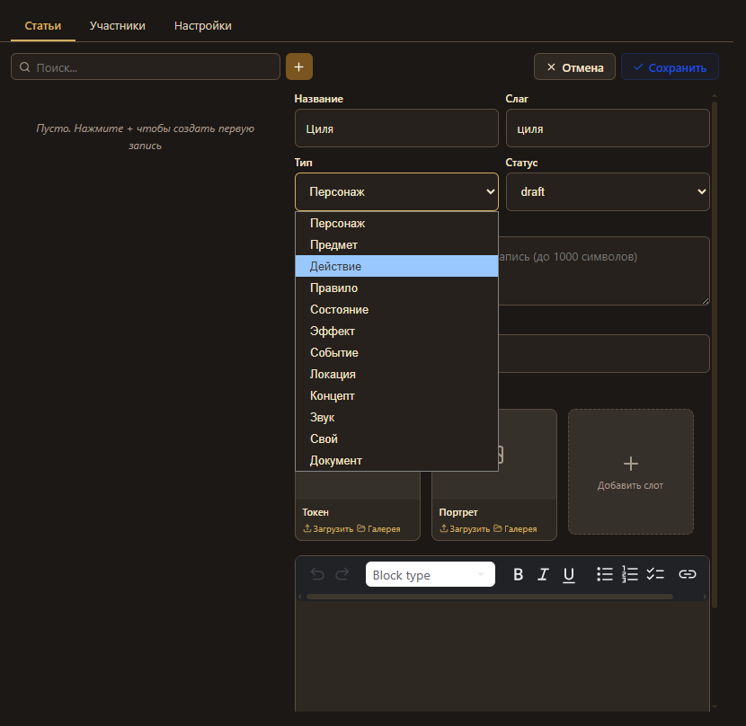
1. Выбираем нужный тип элемента. Для примера я создам персонажа.
2. Вводим имя. Из него "Слаг" сгенерируется сам.
По сути, слаг - это истинное имя элемента, которое помогает программе определить что вы используете. Название у двух элементов может быть одинаковое, а слаг - нет.
3. Не меняйте статус при создании, всё равно после первого сохранения он сбросится до черновика (draft).
4. Добавьте нужные файлы. У персонажа это 2 картинки - токен и портрет. Но можно добавить ещё, при чём файл может быть любой.
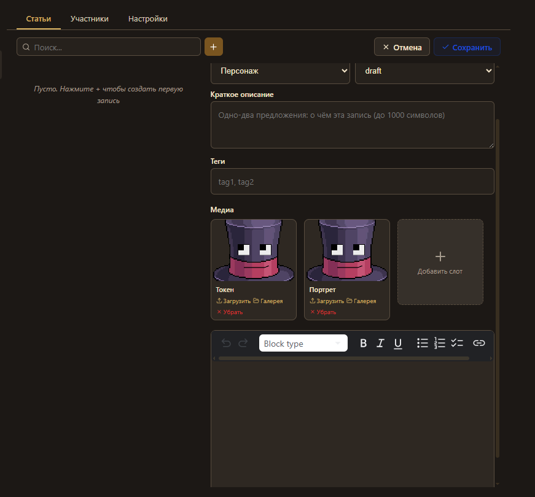
5. Добавьте описание и теги, по вкусу.
6. Ниже есть поле для статьи, если вы хотите написать научную диссертацию внутри токена. Если всё же решили это заполнить, можете посмотреть примеры из встроенных компендиумов.
7. Нажмите "Сохранить"
Токен готов! Можете нажать "Изменить" и поменять статус, но это не так важно.
Но вы меня спросите: "а где статы?", Читайте дальше.
Редактирование в игре
Довольно большая часть настроек любого элемента компендиума редактируется непосредственно на столе. Вот как это происходит: (текст ниже соответствующей картинки)
1. подключить компендиум,
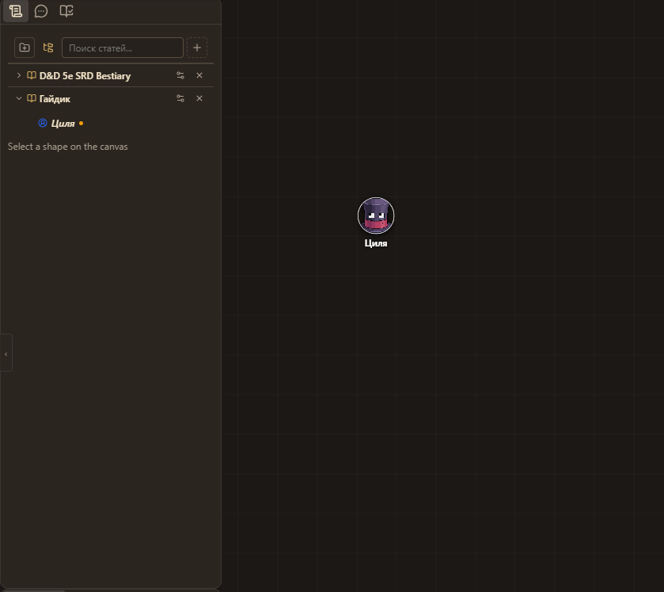
2. вытянуть подопытного на стол,
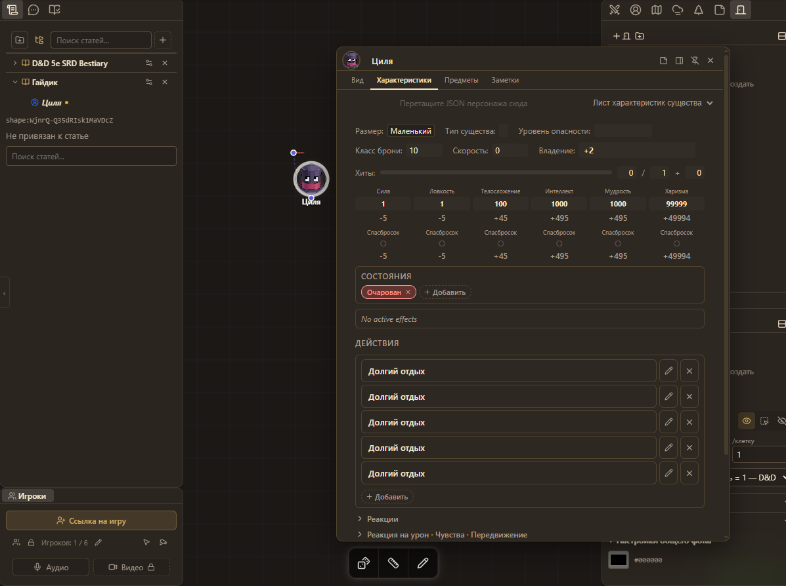
3. на операционном столе поменять статы и характеристики,
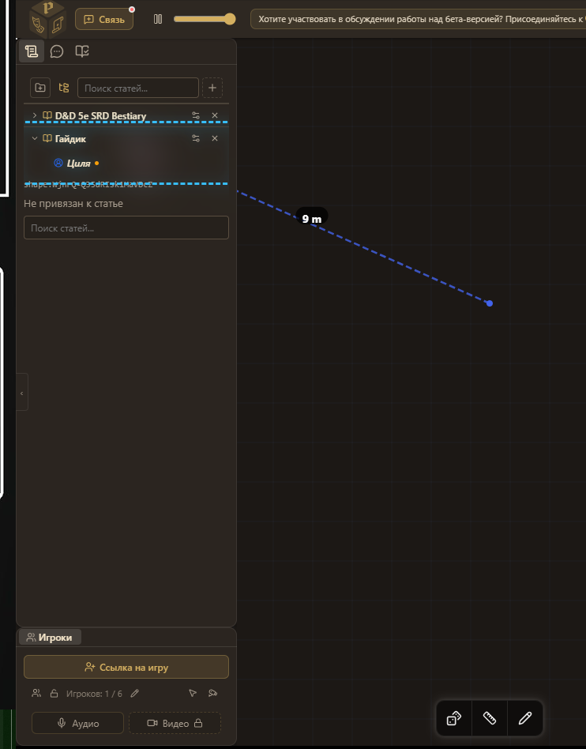
4. перекинуть его обратно,
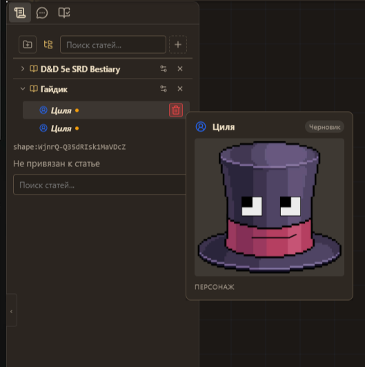
5. и аннигилировать прошлую, несовершенную версию!
Вот и всё, теперь можно перейти обратно в "лабораторию" и поменять слаг клона.
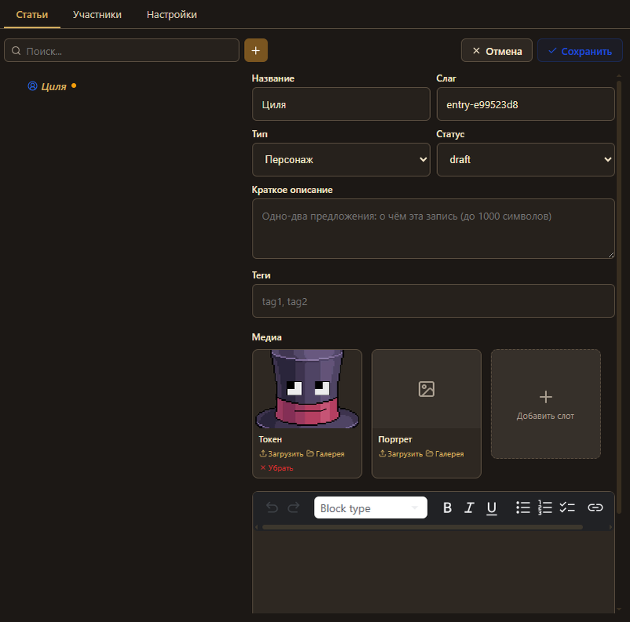
Да, как вы поняли, все действия с компендиумом можно делать прямо на столе (ну, разве что кроме музыки).
Окно "Участники"
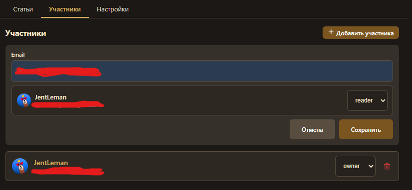
Я единоличник, поэтому никогда этим не пользовался. Но вещь прикольная, здесь можно по почте пригласить другого пользователя в качестве редактора или чтеца (в теории, так можно сделать приватные платные компендиумы на продажу 💹)
Окно "Настройки"
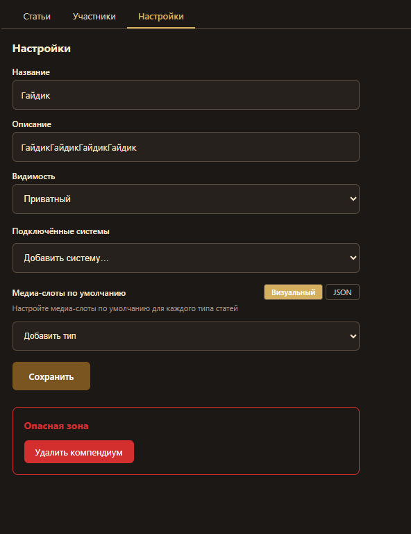
Здесь можно поменять название и описание компендиума,
Совет: не делайте описание длинным, т.к. его тупо никто не сможет прочесть. Если вам жизненно не обходимо длинное описание - создайте предмет-пустышку, и уже в него засовывайте текст любой длинны.
Так же здесь можно настроить видимость компендиума (если решили сделать его публичным - вам сюда).
Можно подключить игровую систему, тогда у Персонажей появится кнопка с листом персонажа.
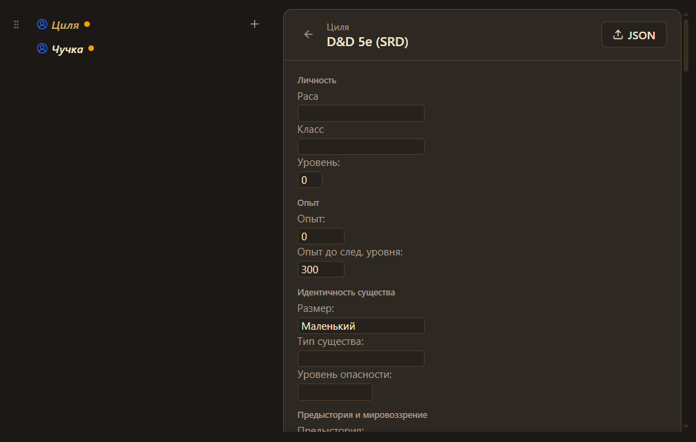
Причём, если добавить несколько систем, то у одного персонажа будет несколько листов))
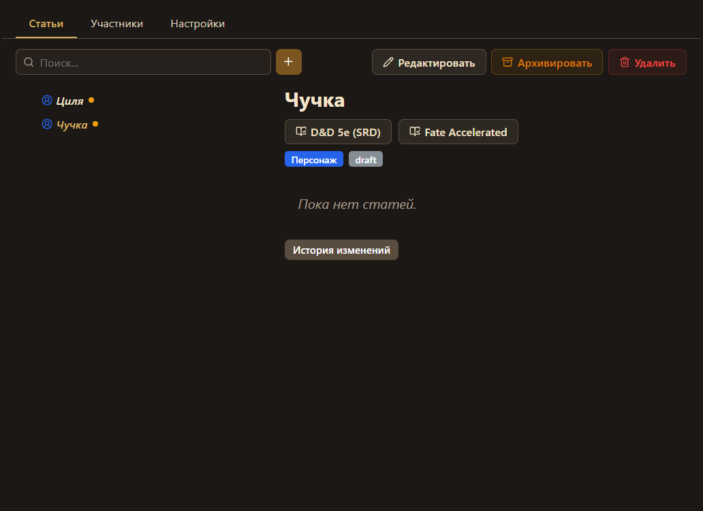
Ещё в настройках можно выбрать "Медиа-слоты по умолчанию", но я опять же не понял, на что это влияет, чтобы я не ставил медиа-слоты в новых и существующих элементах не изменялись :/
Всё, пожалуй. Я рассказал о компендиумах всё, что мог и хотел рассказать. Если нужна помощь, не стесняйтесь - пишите мне (это может помочь мне дополнить гайды), в чаты РолеБазы или им в поддержку. Так же не стесняйтесь создавать и опубликовывать свои компендиумы, это сделает библиотеку богаче, и поможет начинающим игрокам.
Хорошей Игры!